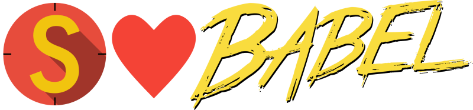

Published: 1 December 2017
A new Stryker plugin that adds support for Babel projects has just been released!
Stryker now supports mutating and testing Babel projects! The installation/upgrade scenario's in this blog post can be circumvented by using the Quickstart if you don't already use Stryker in your project.

In order to support mutating more recent JavaScript features as well as experimental features, we had to change the way we mutate JavaScript code. We had already released a separate plugin for mutating TypeScript code, but now we have also released a separate plugin for mutating JavaScript code. It is called the stryker-javascript-mutator and it replaces the current 'ES5' mutator that has always come with Stryker. With this release, the 'ES5' has been deprecated and it will be removed in the future.
If you use Stryker with JavaScript code on your project, we highly recommend upgrading to the new stryker-javascript-mutator.
You can do so by installing the package:
npm install --save-dev stryker-javascript-mutator
And configuring it in your stryker.conf.js:
mutator: 'javascript',
If you have a plugins section in your config, please consider removing it or add the new styker-javascript-mutator plugin.
Even if Stryker can mutate JavaScript code in which new features are used, your environment may not be able to run that code. Many people use Babel to convert their modern JavaScript to a format that will run environments that do not support these features. We developed a new plugin for Stryker, the stryker-babel-transpiler, during a hackathon sponosored by Info Support. This plugin is capable of transpiling code writen using Babel to code that runs in your enviroment. Give Stryker your babel config and we'll make it work!
To use the new Babel transpiler, start by installing the package:
npm install --save-dev stryker-babel-transpiler
And configure it in your stryker.conf.js:
transpilers: ['babel'],
babelrcFile: '.babelrc', // Is your .babelrc file somewhere else? Please specify it here.
// If you don't have a .babelrc file you can specify the config directly (Not recommended!):
// babelConfig: { "presets": ["env"], "plugins": ["transform-object-rest-spread"] },
If you have a plugins section in your config, please consider removing it or add the new styker-babel-transpiler plugin.
With these new features, we unfortunately do not yet have support for projects using Webpack (such as React). If you need Webpack to bundle your code in order to run your tests please let us know what your setup is! This will help us with the development of Webpack support.
Please try it out yourself and let us know what your think!
Want to get in touch? Find us on Gitter or Twitter.
Back to blogs